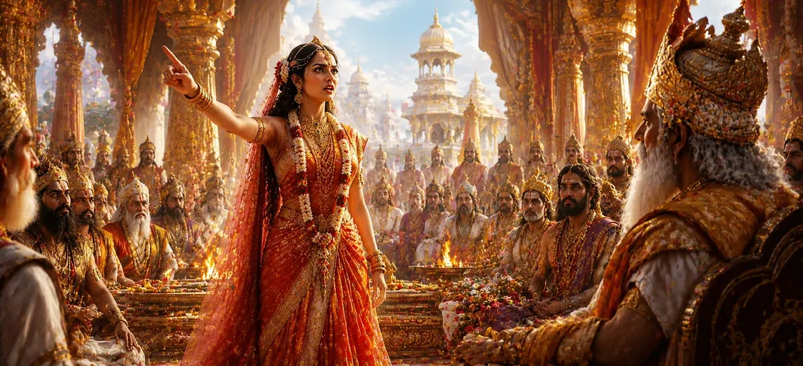

यह अध्याय दक्ष के भव्य यज्ञ में सती के आगमन और उस दर्दनाक अहसास का वर्णन करता है कि भगवान शिव का जानबूझकर अपमान किया गया था। अपने दिव्य पति के प्रति अपने पिता के अनादर को देखकर, सती ने साहसपूर्वक देवताओं, ऋषियों और दिव्य प्राणियों की सभा को संबोधित किया। उनके शब्द भगवान शिव की महानता का एक शक्तिशाली बचाव और अहंकार, अज्ञानता और ईश्वर के प्रति अनादर की निंदा बन गए।
यज्ञ स्थल पर पहुंचने पर, सती ने समारोह की भव्यता और अनगिनत देवताओं और ऋषियों की उपस्थिति देखी। हालाँकि, उसने तुरंत देखा कि भगवान शिव को कोई प्रसाद समर्पित नहीं किया गया था और उसके आगमन का स्नेह या सम्मान के साथ स्वागत नहीं किया गया था।
दक्ष ने शिव के प्रति अपनी शत्रुता नहीं छिपाई। अपने शब्दों और कार्यों के माध्यम से, उन्होंने खुले तौर पर भगवान के प्रति अवमानना व्यक्त की। शिव के दिव्य स्वभाव का सम्मान करने के बजाय, दक्ष ने उन्हें सांसारिक मानकों और व्यक्तिगत पूर्वाग्रह के अनुसार आंकना जारी रखा।
भगवान शिव के अपमान को सहन करने में असमर्थ सती सभा के सामने उठीं और साहस और दृढ़ विश्वास के साथ बोलीं। उन्होंने उपस्थित लोगों को याद दिलाया कि शिव पूरे ब्रह्मांड में देवताओं, ऋषियों और प्रबुद्ध प्राणियों द्वारा पूजनीय थे। उन्होंने उस अज्ञानता की निंदा की जिसने दक्ष को भगवान की महानता को पहचानने से रोका।
सती ने घोषणा की कि अभिमान और अभिमान ने दक्ष को सत्य से अंधा कर दिया है। उन्होंने समझाया कि आध्यात्मिक महानता को धन, स्थिति या बाहरी दिखावे से नहीं मापा जा सकता है। उनके भाषण ने अहंकार की शून्यता को उजागर किया और दिव्य ज्ञान की सर्वोच्चता पर जोर दिया।
सती सत्य और धर्म के लिए खड़े होने के महत्व को दर्शाती है।
अध्याय सिखाता है कि दिव्य महानता सांसारिक निर्णयों से परे है।
अभिमान व्यक्तियों को सत्य और आध्यात्मिक ज्ञान को पहचानने से रोकता है।
सती के बोलते ही सभा में सन्नाटा छा गया। कई देवताओं और ऋषियों ने उसके शब्दों की सच्चाई को समझा लेकिन दक्ष के अधिकार के सामने चुप रहे। सभा की खामोशी ने सांसारिक शक्ति और आध्यात्मिक सत्य के बीच तनाव को उजागर किया।
सती का विरोध सती खण्ड की कहानी में एक निर्णायक क्षण था। शिव के प्रति उसकी निडर रक्षा ने उसकी भक्ति की गहराई को प्रकट किया और जल्द ही आने वाली नाटकीय घटनाओं के लिए रास्ता तैयार किया। सभा एक गहन परिवर्तन की दहलीज पर खड़ी थी।
सती का विरोध सिखाता है कि कभी-कभी कठिन परिस्थितियों में भी सत्य और भक्ति की रक्षा करनी चाहिए। उनका साहस भक्तों को याद दिलाता है कि डर, सामाजिक दबाव या सांसारिक अधिकार से ईश्वर के प्रति सम्मान से कभी समझौता नहीं किया जाना चाहिए। धर्म के लिए दृढ़ता से खड़े होकर, व्यक्ति सत्य और विश्वास दोनों का सम्मान करता है।
शक्तिशाली देवताओं, ऋषियों और शासकों के बीच खड़े रहते हुए भी, सती पूरी तरह से भगवान शिव के प्रति समर्पित रहीं। जब उनके सम्मान पर हमला किया गया तो उन्होंने चुप रहने से इनकार कर दिया और दिखाया कि सच्ची भक्ति के लिए साहस के साथ-साथ प्यार की भी आवश्यकता होती है। उनके कार्य प्रतिकूल परिस्थितियों में ईश्वर के प्रति वफादारी का एक स्थायी उदाहरण बन गए।
सभा में अहंकार और सत्य, अहंकार और भक्ति के बीच टकराव देखा गया। हालाँकि उपस्थित कई लोगों को एहसास हुआ कि एक बड़ा बदलाव आ रहा था, लेकिन कुछ लोग यह समझ पाए कि जो होने वाला था उसकी भयावहता। सती के शब्द पूरी सभा में गूँज उठे, जिससे शिव पुराण की सबसे महत्वपूर्ण घटनाओं में से एक की शुरुआत हुई।
"जहाँ सत्य का अपमान होता है, वहाँ मौन कमजोरी बन जाता है; जहाँ भक्ति बोलती है, वहाँ धर्म चमकता है।"
सती खण्ड की पवित्र घटनाओं की खोज जारी रखें क्योंकि सती द्वारा भगवान शिव की साहसी रक्षा एक गहन और हृदय विदारक क्षण की ओर ले जाती है जो दिव्य कहानी के पाठ्यक्रम को हमेशा के लिए बदल देगा।